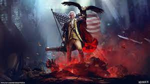

I enjoy learning the Japanese language in my freetime. The culture of the Japanese intrigues me, from their respect for each other, their cleaniness, the technology, along with the beautiful scenery.
Ever since I was a young boy I had a love for airplanes. I love flying, I love the smell of jet fuel, and I soon want to recieve my private pilots license
My passion for American history has grown so much as I have matured. I love watching documentary films of the American Revolution and take in the greatness of our countrys' founding fathers.
When I was entering high school I was introduced to golf. Golf was a game I excelled at, and I still enjoy playing in my freetime with friends.